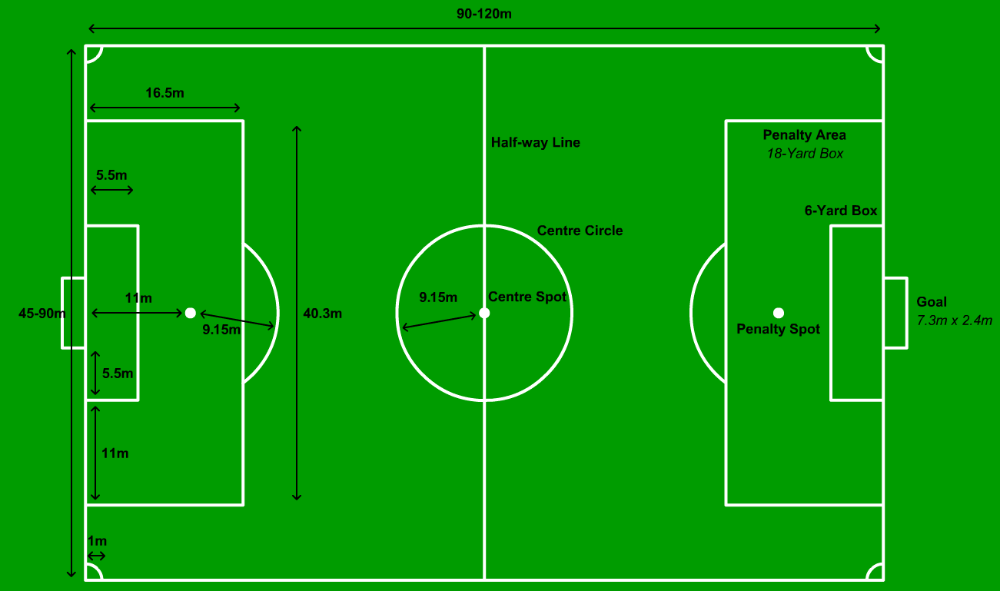

Despre Fotbal
Fotbalul este un sport de echipă jucat între două echipe de câte 11 jucători fiecare,
care folosesc în principal picioarele pentru a propulsa o minge în jurul unui teren.
Se joacă cu o minge sferică pe un teren dreptunghiular, acoperit cu iarbă, cu câte o poartă la fiecare capăt.
Scopul jocului este de a înscrie goluri introducând mingea în poarta adversarului.
Tradițional, jocul se desfășoară în două reprize de 45 de minute fiecare, pentru un timp total de 90 de minute.
Cu aproximativ 250 de milioane de jucători activi în peste 200 de țări și teritorii,
este cel mai popular sport din lume.
Jocul de fotbal se joacă conform Legiile Jocului,
un set de reguli care este în vigoare din 1863 și este menținut de IFAB (International Football Association Board) din 1886.
Două echipe de câte 11 jucători fiecare încearcă să lovească o minge rotundă (mingea de fotbal), cu scopul de a o introduce în poarta adversă.
Echipa care înscrie mai multe goluri până la finalul jocului este declarată câștigătoare,
dacă ambele echipe au marcat același număr de goluri, meciul este considerat egal.
Una dintre primele reguli este interzicerea atingerii intenționate a mingii cu mâna în timpul jocului (excepție fac portarii).
Singura dată când jucătorul se poate folosi de mâini este atunci când aruncă de la margine (execută un aut).
În rest, jucătorii se pot folosi de orice parte a corpului pentru a direcționa mingea.
Jucătorii se pot apropia de poarta adversă astfel: prin dribling (alergarea cu mingea la picior),
prin pasarea mingii între coechipieri și prin șutarea acesteia spre poartă.
Jucătorii adverși pot recupera mingea prin interceptarea unei pase sau prin deposedarea adversarului.
Contactul fizic este limitat.
Jocul se oprește doar în momentul în care mingea părăsește cu întreaga circumferință o linie ce marchează terenul
(fie pe pământ, fie în aer) sau când arbitrul fluieră. Jocul se reia prin diferite metode, analizate în continuare.
De obicei, într-un meci disputat la un nivel profesionist se înscriu puține goluri.
De exemplu, în prima divizie engleză (Premier League), în sezonul 2005-2006, s-au marcat, în medie, 2,48 de goluri pe meci.
În plus, 88% din jocuri s-au încheiat cu mai puțin de 4 goluri marcate.
Dar, doar 8% dintre partidele disputate s-au terminat fără gol marcat.
În perioada 2003-2004, scorul cel mai des întâlnit în cele mai importante ligi din Europa a fost de 1-1 (12,4% din toate meciurile disputate).
Tactici
Legile jocului nu impun o altă poziție ocupată în teren de vreun jucător, în afara celei de portar. De-a lungul timpului au apărut o serie de poziții specifice. Acestea sunt:
- fundaș - jucător specializat în prevenirea încercărilor de a marca ale adversarilor
- mijlocașul - jucător care organizează jocul ofensiv al echipei și oferă pase decisive atacanților; totodată el ajută apărătorii, încercând să oprească atacurile adverse încă de la început
- atacantul - jucător al cărui principal rol este acela de a marca goluri
Aceste poziții sunt împărțite la rândul lor, după timpul petrecut de un jucător într-o anumită parte a terenului de joc.
De exemplu, există fundași centrali sau mijlocași stânga.
Aceste poziții nu sunt restricționate de reguli, iar fotbaliștii sunt liberi să-și schimbe pozițiile în timpul jocului.
Acest lucru se aplică și portarilor, care, deși în marea majoritate a timpului se află în preajma propriei porți,
pot participa oricând la jocul ofensiv al echipei. Cele mai întâlnite cazuri sunt la loviturile libere sau la cornere.
Dispunerea jucătorilor pe teren se numește așezare tactică.
Exemple de așezări tactice: 4-4-2 (4 fundași, 4 mijlocași, 2 atacanți); 4-5-1, 4-3-3
Stabilirea așezării tehnico-tactice a echipei intră în subordinea antrenorului.
Teren

 Pe plan internațional, asociația de fotbal este guvernată de către FIFA
Pe plan internațional, asociația de fotbal este guvernată de către FIFA
Sub conducerea FIFA, există șase confederații continentale:
| Abreviere |
Nume complet |
| AFC |
The Asian Football Confederation |
| CAF |
The Confederation of African Football |
| CONCACAF |
The Confederation of North, Central America and Caribbean Association Football |
| CONMEBOL |
The South American Football Confederation |
| OFC |
The Oceania Football Confederation |
| UEFA |
The Union of European Football Associations |
Cele mai bune 10 ligi din lume la momentul actual:
- Premier League
- Bundesliga
- LaLiga
- Seria A
- Ligue 1
- Eredivisie
- Brasileiro
- Primeira Liga
- Liga MX
- Premier League (Russia)
Clasamentul Global de Fotbal